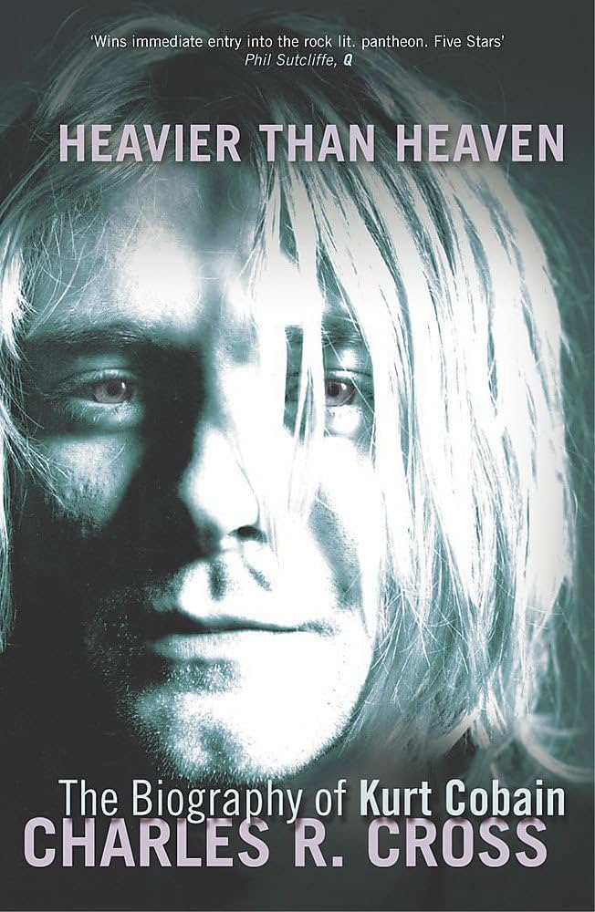

date read: 2026.06.02 ~ 2026.06.23
HEAVERY THAN HEAVEN: A Biography of Kurt Cobain

Hello everyone! You may or may not be wondering why I would choose this book. Well, I realized something about myself: I love reading about emo boys. Why? Because I’m a midwest emo probably. I have a blog for Pete’s sake. Literally! Pete Wentz, the vocalist for Fall Out Boy, has (had) a blog. What’s more midwest emo than that?
KURT ~ MAYA?
Thus far, I’m about 30% done. The writing does a good job at explaining his life and the in-between human parts that probably weren’t recorded, like him thumbing the ten dollars he got from his first paid gig. I have to say that I relate with Kurt a lot more than I expected which may be a common take. It states that his favorite food was pizza and coke, a universally tasty combo. I suppose I can relate with his magnitude of edginess, and, despite his outward expressions, how much he cared about other people’s opinions. For instance, he would not wear certain clothing because someone had made fun of him for it. He would take it personally if someone mocked his band members. He even stopped playing his band’s original songs and started playing other more popular songs because the audience said to. We are both empaths, and pretty short. Anyway, I’ll let you guys know how the rest goes l8er.
DELIBERATELY NONCHALANT
I’m 40% done and I am have been thinking all today about how Kurt often planned out what he was going to say, how he was going to say it, his physical actions just to display his classic air of edginess. I find this interesting because I do the same. I know I may sound uppity comparing myself to Kurt Cobain constantly, but it’s really meant to say that he’s not really some special, mysterious guy; he just had a dream, consistency, and a commitment to the bit. I respect him for that immensely.
He wouldn’t let the other members smoke next to him in fear that it would hinder his vocals.
60%
I’m now about 60% done and at this point, this is where Kurt and I separate in mindsets, but maybe it’s because he’s 24 at the current point in the book. He’s doing a lot of nonsensical things to me, like doing drugs when his friends tell him not to. Though, I can relate with his interest in unusual or strange occurrences. This sounds terrible but Kurt used to watch his turtles eat tadpoles and watch the remains squirm. I would never initiate these, but I understand the intrigue.
FRANCES BEAN COBAIN
I’m about 69% through and man, oh man, were the 90’s a tough time for celebrities. At this stage in the book, KC and Courtney Love are trying to kick their drug addictions for the baby. Courtney Love went through heavy withdrawals throughout pregnancy just so their child could be born healthy. They wanted this baby so bad that they made a vow that if anything happened to her, they would perform a double suicide. Thankfully, Frances Bean Cobain was born healthy. Throughout listening to this part, I could feel the emotional impact it had on them despite the static narration. Imagine going through all of the symptoms of pregnancy PLUS drug withdrawal. That’s incredible. What’s not-so-incredible are tabloids. I’ve learned through this book just how harmful widespread misinformation can be. Listen to this: Vogue published an article claiming that CL and KC were just some junkies unfit to raise a child. People close to them also supported this claim. Even the gun’s n’ roses guy said they should go to jail if they were to keep the baby. Additionally In the article, they used a fake image of an unwell baby pretending it was Frances. That is literally devil work if I’ve ever heard of it. This got the public’s judicial mind running wild. Because of these articles, everyone had the same opinion: their child was unsafe. Only three days after conception, the city council voted to take Frances away from them.
Maybe they were somewhat unfit to be parents; KC was still using heroin regularly, becoming suicidal, and their relationship was in turmoil. But I think that doing the responsible things they necessarily didn’t have to do just for the health of the baby and the love they had for her probably meant something, something more than a mere 72 hours with a baby you’ve been keeping safe for nearly a year. IDK… ok i’m gonna continue reading.
ADDICTION
I want to talk about something that Kurt Cobain had mentioned to his sister about his addiction to heroin; He said he would rather just grow tired of heroin rather than quit now, but inevitably do it down the line. It’s almost as if there was a limited supply of heroin he was allocated to and had to use before he died. I thought this was an interesting perspective.
Also, I’m 80% through, and in my opinion, it seems very obvious that he’s eventually gonna die. He’s overdosed/literally died multiple times and made no signs that he wanted to change this behavior, extremely suicidal, depressed, and in a toxic relationship. Actually, speaking of overdosing, when I was walking around Amerikamura with Jessica-san I think we watched some guy semi-overdose. He was definitely on drugs, and he passed out in his friend’s arms. It was terrifying and I noticed I had both the feelings of wanting to run away and wanting to stopping to help. Unfortunately, I think 90’s media chose the option to continue to make fun of him, berate him for his addiction, and post harmful tabloids about it. KC was very shameful of his addiction and sensitive of his image, saying he’d rather commit suicide than see an article about his overdosing or being arrested. This is why if I ever became famous, I’d never read anyone’s comment about myself. Or, I’d have a personal moderator sift through the comments and read to me only the good ones. This is also why I feel a certain way about idols because they have to go through the same scrutiny that KC endured, but at a very young age.
100% DONE
I finished listening to this book wandering around some scary areas in Osaka. If you are unaware of how Kurt Cobain ended up, he committed suicide by gun at the age of 27. One word can describe the end of his life: haunting. I mean, it’s expected, but something about how unresolved and painful his life was, especially nearing the end is a little… It feels like when someone goes missing and no one will ever know what happened to them. It feels like when someone commits a horrendous crime, but they are freed over some stupid underlying rule. It feels like when you get so close to solving a puzzle, but one piece is out of line. It sort of… doesn’t feel fair. Kurt Cobain’s story truly is a tragedy. It was like the complete opposite of how a trope-y hero movie would go. Every single event in the timeline and the thoughts or emotions he went through made me feel so uncomfortable. It’s like every event since the beginning of his life just kept piling onto this huge, disgusting pile, and everyone is just watching it grow and grow.
FINAL THOUGHTS
Overall, I mainly feel sad for Kurt. He was an angry, sad guy and he was never shown how to escape it without harming himself.
I like Kurt Cobain. Something inspirational to me about Kurt is how freely he lived his life. Even though he cared so much about what people think, he did whatever he wanted whether that was breaking every instrument on stage, telling off bigots, or spitting on his fan. The fact that he did care is something admirable; Whenever Kurt loved something, he would heavily protect it such as his daughter.
Throughout this book, I’ve learned to never do heroin. Never ever.
THANK YOU!
Kurt, if your essence is truly following me, I’m so happy that you exist. Thanks for bringing me through the tough times I’ve faced here in Osaka. You’re epic.
Please catch me in the next review! I’ll be reading “Requiem For A Dream” by Hubert Selby Hr.